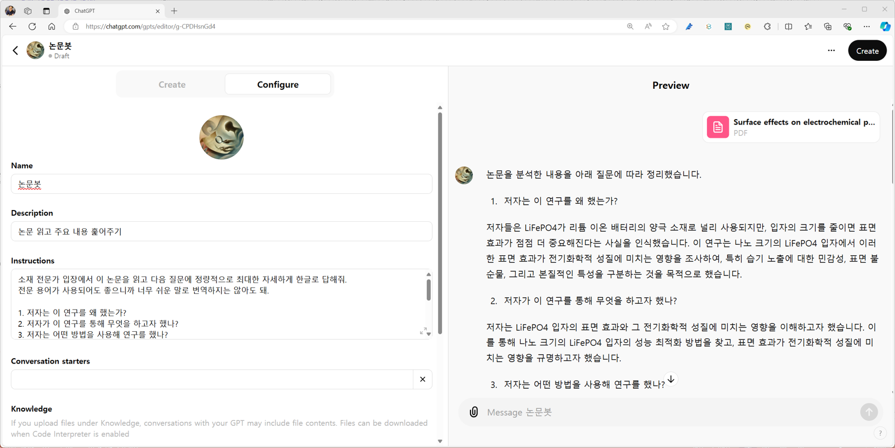

- 2023년 11월, OpenAI는 custom GPT라는 서비스를 공개합니다.
- 사용자가 시스템 프롬프트와 사전지식을 제공해 맞춤형 서비스를 만들 수 있게 한 것입니다.
- 연구원으로서 연구에 활용할 수 있는 맞춤형 GPT들을 만들어 공개합니다.
1. ChatGPT 반복작업
- 대학원생을 포함해 연구직에 있는 많은 이들이 논문을 읽느라 시간을 씁니다.
- 연차가 쌓이면서 자기 분야에 대해서는 상당히 익숙해지기도 하지만,
- 다른 분야의 논문을 읽어야 하거나 자기 분야라도 논문을 갑자기 많이 읽으려면 쉽지 않습니다.
- ChatGPT를 비롯한 생성 AI 도구들에 논문을 올리고 도움을 처할 수 있는 기술은 구원이 됩니다.
- 그렇다고 AI에만 의존해서 내용을 파악하면 곤란합니다.
- AI에 요약시킨 초록은 디테일이 생략되고 독창성이 사라지는 경우가 많습니다.
- AI로 논문의 포인트를 잡고 정독을 하며 디테일을 챙기는 것이 좋습니다.
- 그런 의미에서 논문을 읽기 전에 다음과 같은 주요 사항을 파악하면 좋습니다.
- 위와 같은 절차를 거쳐 얻어낸 파일은 다음과 같은 내용을 담고 있습니다.
- 화면에 찍혔다가 사라지는 화면이 아니라 파일로 남기 때문에 축적에 유리하며
- 자유롭게 수정이 가능하기 때문에 논문을 읽으면서 챙기는 디테일 추가도 가능합니다.
- 문제는 프롬프트가 적잖이 길다는 점,
- 그리고 이렇게 읽어야 할 논문이 많다는 점입니다.
- 프롬프팅이 반복작업이 되어서는 곤란합니다.
- 같은 프롬프트를 자동으로 입력할 시스템이 필요합니다.
2. GPTs 만들기
2.1. GPTs Instructions
- GPTs 웹사이트에 가면 OpenAI에서 만든 custom GPT를 비롯해 여러 GPT를 볼 수 있습니다.
- 맞춤형 GPT들이 다양한 카테고리로 엮여 있어서 여기서 찾아볼 수도 있고,
- 검색을 통해 원하는 GPT를 찾아볼 수도 있습니다.
- 화면 오른쪽 위에 있는 + Create를 눌러 제작 모드로 들어갑니다.
- 제작 모드로 들어가면 왼쪽은 제작, 오른쪽은 미리보기입니다.
- 왼쪽에 Create탭이 기본으로 선택되어 있습니다.
- 여기서 대화형으로 GPT를 만드는 것도 가능하지만 Configure탭으로 갑시다.
- Create 탭에서 대화형으로 하는 요청사항은 Configure 탭의 Instructions에 반영됩니다.
- 이 과정에서 줄글로 적히면서 가독성이 나빠집니다.
- 예를 들어, 무슨 말을 하건 삐딱한 자세로 논리적인 허점을 찾아 반박하라고 만든 딴지봇의 Instruction은 다음과 같습니다.
- 일부 기능을 수정하려고 해도 읽기가 쉽지 않습니다.
- 따라서 Configure탭에 위 프롬프트를 반듯하게 적어 넣는 것이 최선입니다.
- 그리고 중요한 것은, Capabilities의 Code Interpreter & Data Analysis에 반드시 체크해야 합니다.
- .docx 등 파일 출력시 자체적으로 파이썬 코드를 작성해 실행하기 때문입니다.
2.2. GPTs icon
- GPTs 아이콘을 만들 차례입니다.
- Configure 탭 상단 + 부분을 클릭하여 사진을 올리거나, DALL.E로 그리거나를 선택합니다.
- 특별히 마음에 있는 그림이 없다면 DALL.E로 그리는 것이 여러 모로 편리합니다.
- DALL.E를 클릭하면 Create 탭에서 생성이 진행됩니다.
- 결과물을 보고 마음에 들지 않으면 이미지 생성 프롬프트를 입력해 새로 그릴 수 있습니다.
- 돋보기로 논문을 세심하게 살펴보는 초현실주의 그림을 지시해 아이콘을 얻었습니다.
2.3. 동작 시험 & Prompt Engineering
- 저장한 후, 오른쪽 Preview에 논문을 올리고 아무 프롬프트 없이 실행합니다.
- 기대한대로 동작하는지 확인하며, 프롬프트를 조금씩 수정합니다.
- 이름도 논문봇이라고 붙였습니다.

- 기대대로 동작한다면, 프롬프트가 아무리 길어도 문제없다는 의미입니다.
- 그렇다면, 프롬프트를 최대한 자세하게 넣어줍니다.
- 추출하고자 하는 모든 항목을 자세하게 기술하고,
- 출력 양식도 정확히 기술합니다.
- 특히 DOI 등 URL은 결과물인 .docx 파일에서 클릭할 수 있도록 자세한 지시를 넣습니다.
- 실행할때마다 흔들리는 일관성을 조금이나마 확보하고자 Temperature=0도 넣었습니다.
- 그러나 플라시보입니다. API가 아니면 동작하지 않습니다.
- 참고로, 막연하게 “요약하라”고 하면 제대로 된 정보를 얻기 힘듭니다.
- GPT의 답변 속도에 넋을 놓고 보다가 막상 찬찬히 읽어 보면 뻔한 말만 하는 경우가 많습니다.
- 논문의 시작 부분인 초록과 서론에 있는 연구 배경에 치중해서 이 논문에서 말하고자 하는 바가 사라지기 때문입니다.
- 정확하게 논문이 기여한 바, 방법론, 한계등을 최대한 상세하게 물어야 합니다.
- 최종적으로 결과 파일을 보면서 지시를 충실히 이행했는지 확인합니다.
2.4. 데이터 추출
- 논문봇에는 데이터를 추출하는 내용이 많지 않습니다.
- 그러나 소재 연구자를 위해 만든 Materials Data Extractor에겐 중요합니다.
- 의외로 GPT가 데이터 추출에는 취약합니다.
- 논문에 담긴 데이터를 최대한 빠트리지 않고 추출하려면 반복작업을 시켜야 합니다.
- 다음은 Materials Data Extractor의 프롬프트입니다.
- 네 번을 반복하며 논문 여기저기를 지정하여 훑어야 하며
- 특히 빠트린 데이터가 없는지 여러번 확인시켜야 합니다.
2.5. GPT 실행 이후
- 맞춤형 GPT를 실행했다고 끝이 난 것은 아닙니다.
- ChatGPT는 여전히 다음 입력을 기다리고 있습니다.
- 이를 활용하여 추출한 결과를 사용해 그래프 작성이나 추가 분석을 시킬 수 있습니다.
- 특히 그래프는 최근 interactive plot을 지원하여 활용도가 높아졌습니다.
- .xlsx나 .pptx 같은 다른 파일 형식으로도 출력할 수 있습니다.
- 어떻게 활용할지는 본인의 아이디어, 본인의 선택입니다.
- 아무리 좋은 custom GPT도 막상 제가 사용하려면 아쉬운 부분이 많았습니다.
- 제작자의 실력이 부족해서보다 저와 원하는 바가 다르기 때문입니다.
- 여러분과 저도 원하는 바가 다를 것입니다.
- 여러분께서 각자의 custom GPT를 만들어 사용하길 바라며,
- 이를 위해 제가 이 글에서 프롬프트를 공개하되 복사하기 어렵게 이미지로 넣었습니다.
- 시행착오를 두려워 마시고 좋은 비서를 스스로 만드시길 바랍니다.